In my role at Microsoft I work with State agencies on ideating, designing, and prototyping solutions to meet business needs. I'm sharing some of these prototype solutions below in the spirit of thought sharing.
Correspondence Management
New Mexico Environment Department
New Mexico's Environment Department receives requests for document signature via email. Previously, they had a staff member who would manually print these off and coordinate collecting signatures of four people at the agency. I designed and built a correspondence management prototype for the agency to alleviate their staff from this manual task.
The prototype automatically handles the reception of documents, task routing, signature collections, and then delivery back to the original requestor via email. This minimizes the human interaction to only the areas in which it matters: reviewing and signing the documents.
ImmuTrack
Amid the push for improving COVID-19 vaccination rates in the United States in the middle portion of 2021, I collaborated with Microsoft's State & Local Government industry team and Health Information Exchange CRISP to design and develop an early prototype of a immunization outreach platform.
This system is designed to manage the outreach/marketing campaigns to at-risk state citizens through multiple mediums at scale. The system enables administrators to evaluate which state residents are at highest risk, establish recurring outreach schedules for these residents, and monitor communication, registration, and vaccination status for these residents.
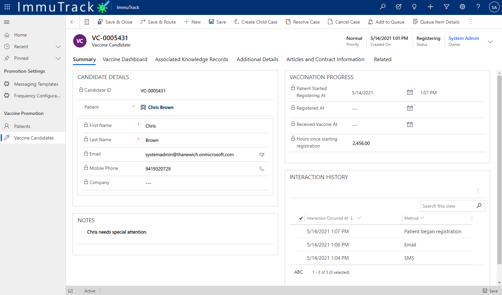
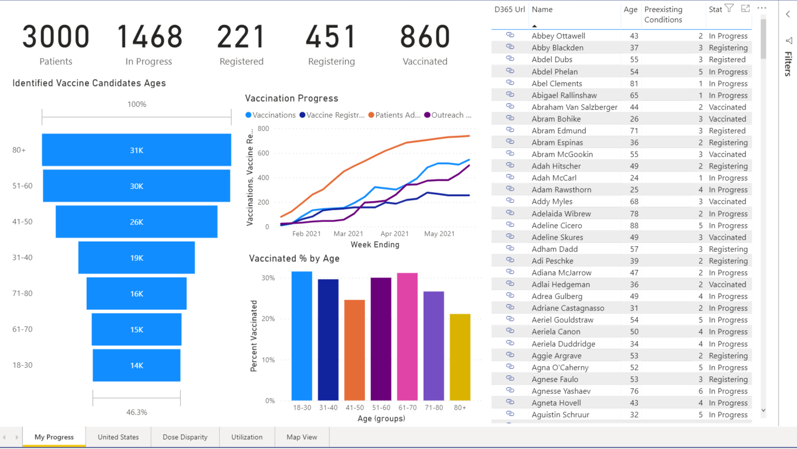
Managed Investment Routing
Georgia Technology Authority
Georgia Technology Authority's Enterprise Portfolio Management Office (EPMO) assists state agencies with the planning and procurement of large technology investments. State agencies submit applications to have an investment reviewed and this is routed through a set of procedures based upon several criteria.
EPMO approached my team and described their need to streamline the investment routing process. I worked with administration to acutely understand their needs and the business process and logic behind this workflow. I carefully designed and developed a solution for EPMO that addressed everything they were looking to improve upon and more.
Several project features:
Dynamic investment questionnaire
Embedded ingestion web app in the GTA EPMO website
Internal task routing based on investment type and scale
Automated EPMO to agency communication
Procurement review generation and viewing with granular telemetry
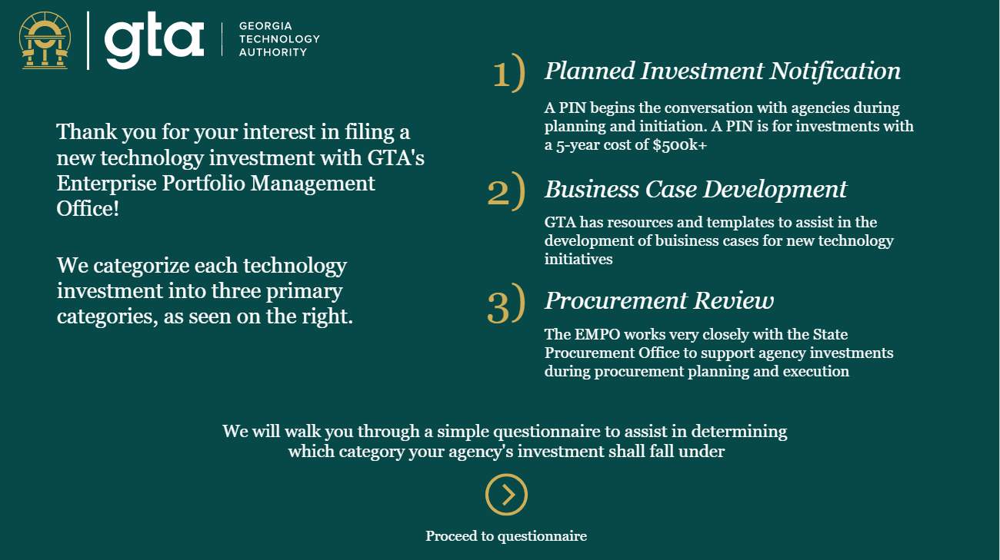
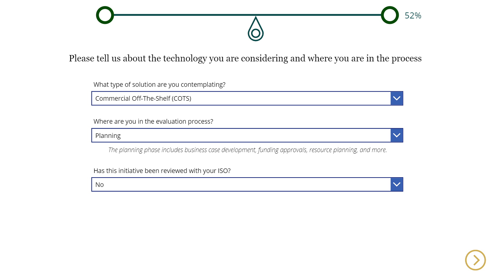
Offender Mail Processing
Kansas Department of Corrections
Kansas is looking to combat the spread of drugs and contraband through the offender mail system. Violating substances often enter the facility through the mail system. Kansas identified digitizing the mail system as an opportunity to solve this issue.
I worked with Kansas' Department of Corrections on ideating and designing what a solution that would address these needs would look like on Microsoft's Power Platform. I designed a proof-of-concept of this system.
A staff member at the Dept. of Corrections scans incoming offender mail with a mobile application. The contents (written word) are analyzed with optical character recognition and cognitive services and are assessed on five risk profiles: gang, weapon, drug, violence, and conduct. If any risk rating surpasses a specific threshold, facility administrators are alerted of this. Offenders later review the letters over a touch screen tablet.
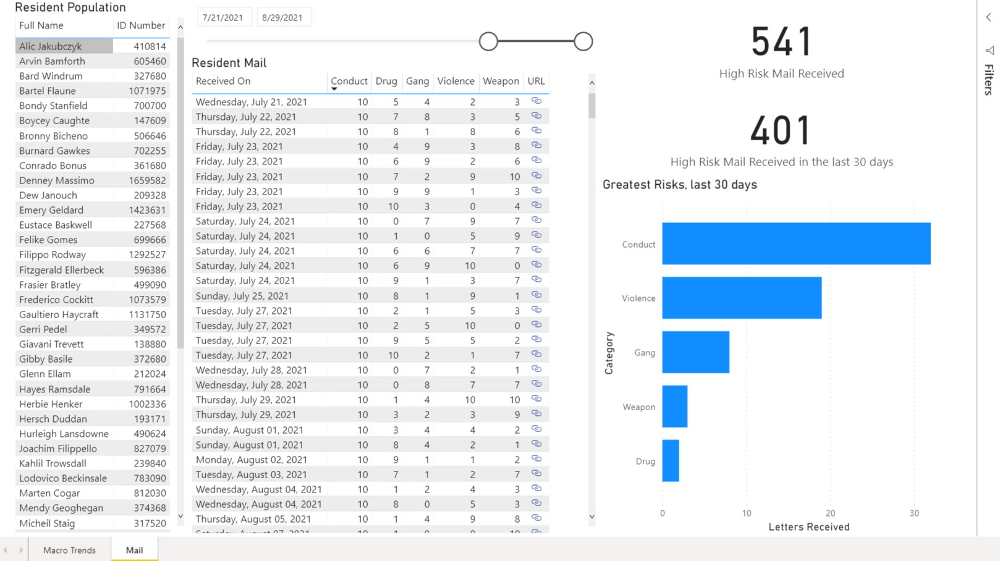
Offender Arrival & Booking
Kansas Department of Corrections
Kansas' Department of Corrections was searching for a modern system to migrate their offender booking workflow to. I designed and built an offender booking system on the Power Platform for Kansas.
The system handles the entire booking process including mugshot capture, body marking/imager capture, demographics data input, badge generation, and infractiong logging.
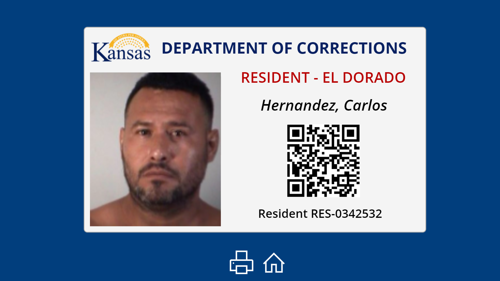
Online Dispute Resolution
Colorado Judicial Branch
Colorado's Judicial Branch was looking for a way to provide two parties the opportunity to settle a dispute before the case heads to the state court system. The department approached me and team with this vision and an ask for assistance in indentifying a suitable solution.
I built a fully-functioning early iteration of such a system on Microsoft's Power Platform using Power Apps, Power Automate, Power Portals, and core HTML/CSS/JS.
The system provides the following functionality:
New dispute filing for the general public (custom data gathering for different types of disputes)
Account registration and dispute-lead invitation
Automated dispute stage progression
Asyncrhonous chat functionality between the plaintiff and defendant
Dispute moderation by an assigned Judicial staff member
Settlement offer proposal, acceptance, and counter offering support
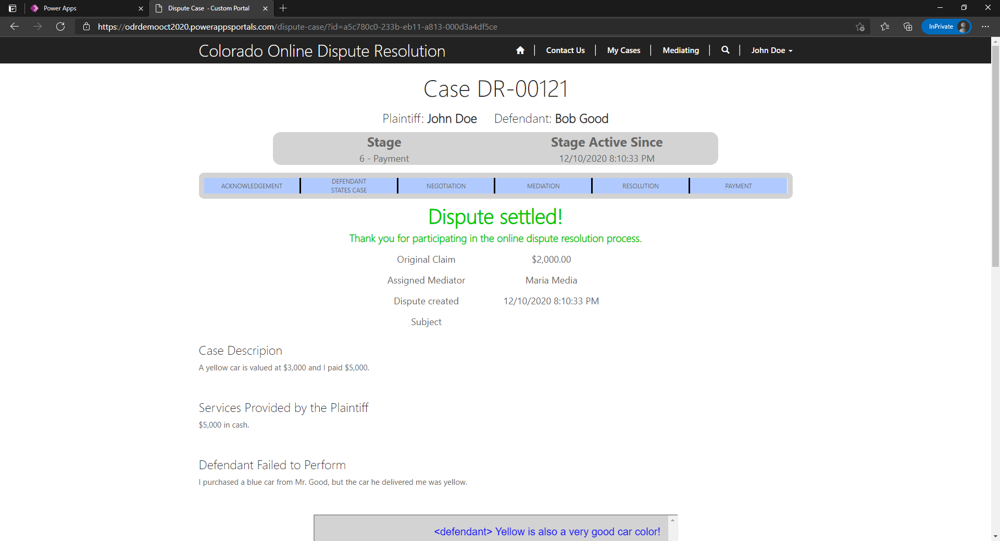
Online Jury Questionnaire
Colorado Judicial Branch
Traditionally, Colorado's court system would print off jury questionnaire forms to prospective jury members, have them filled out via pencil or pen, and have a staff member manually enter this data into a system. The branch expressed a desire to digitize the manual process and automate where possible.
I designed a flexible and robust proof of concept on Microsoft's Power Platform that would allow for the configuration and distrubution of questionnaires to Colorado's citizen population upon being called into jury service.
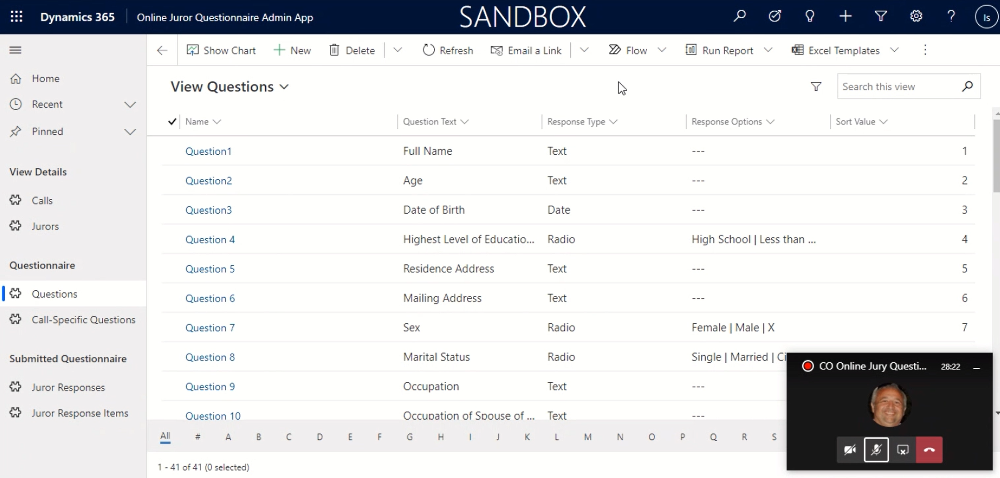
Request for Leave
State of Nebraska
The State of Nebraska approached my broader Microsoft team regarding the need to modernize their time off requesting application for state employees. After initial discovery, requirements gathering, and collaborative design, I created a request for leave minimally viable product for the state to visual the Power Platform in such a use case.
The solution fully supports the requesting leave process, approval routing, staffing forecasts, and team request reviewing.
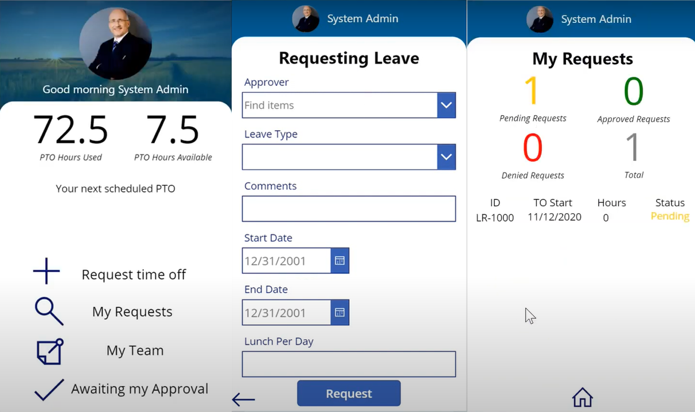
Employee Onboarding/Offboarding
NM Aging and Long-Term Services Department
New Mexico's Aging and Long-Term Services Department (ALTSD) was looking for a central location to digitally store documents, details, and steps/procedures for the onboarding and offboarding of their employees. This is a solution that virtually any organization or agency would be able to make use of.
 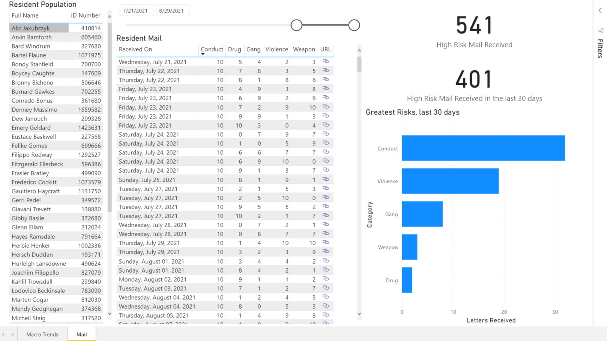
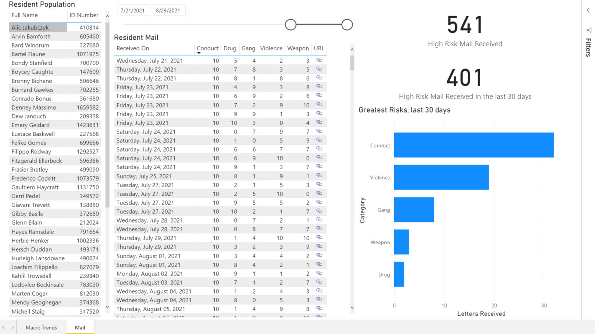